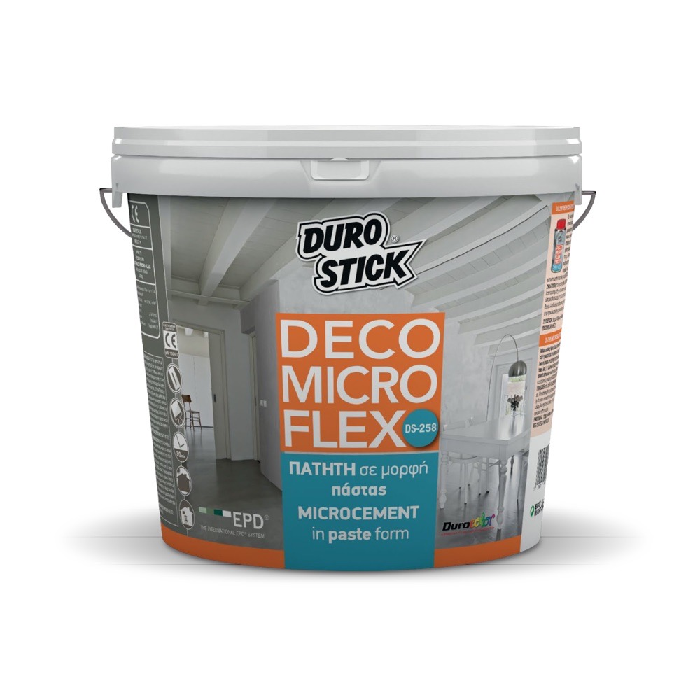
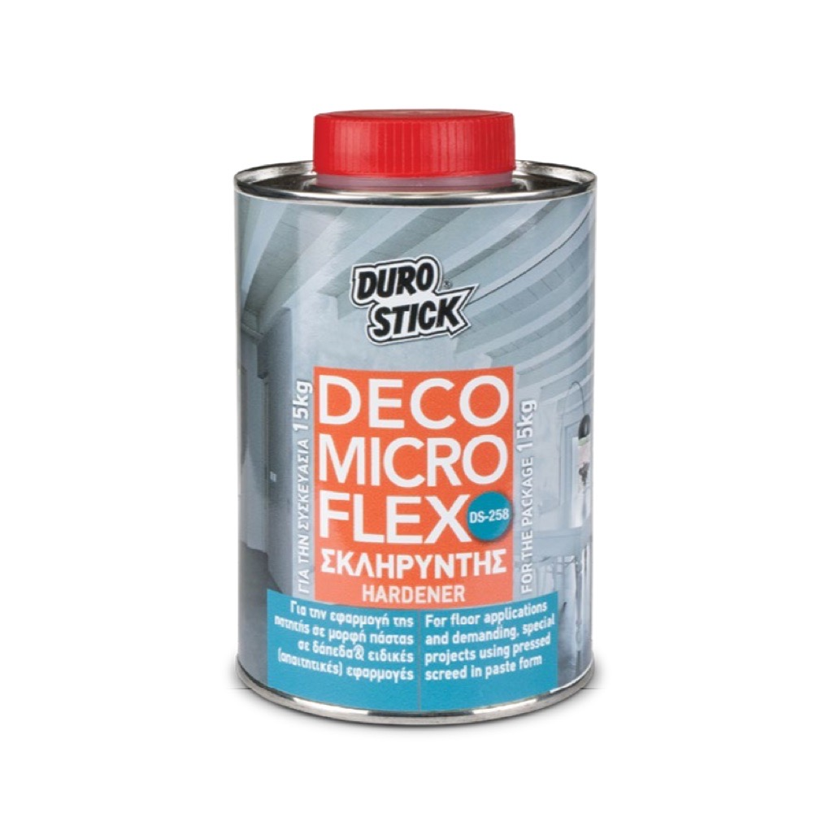
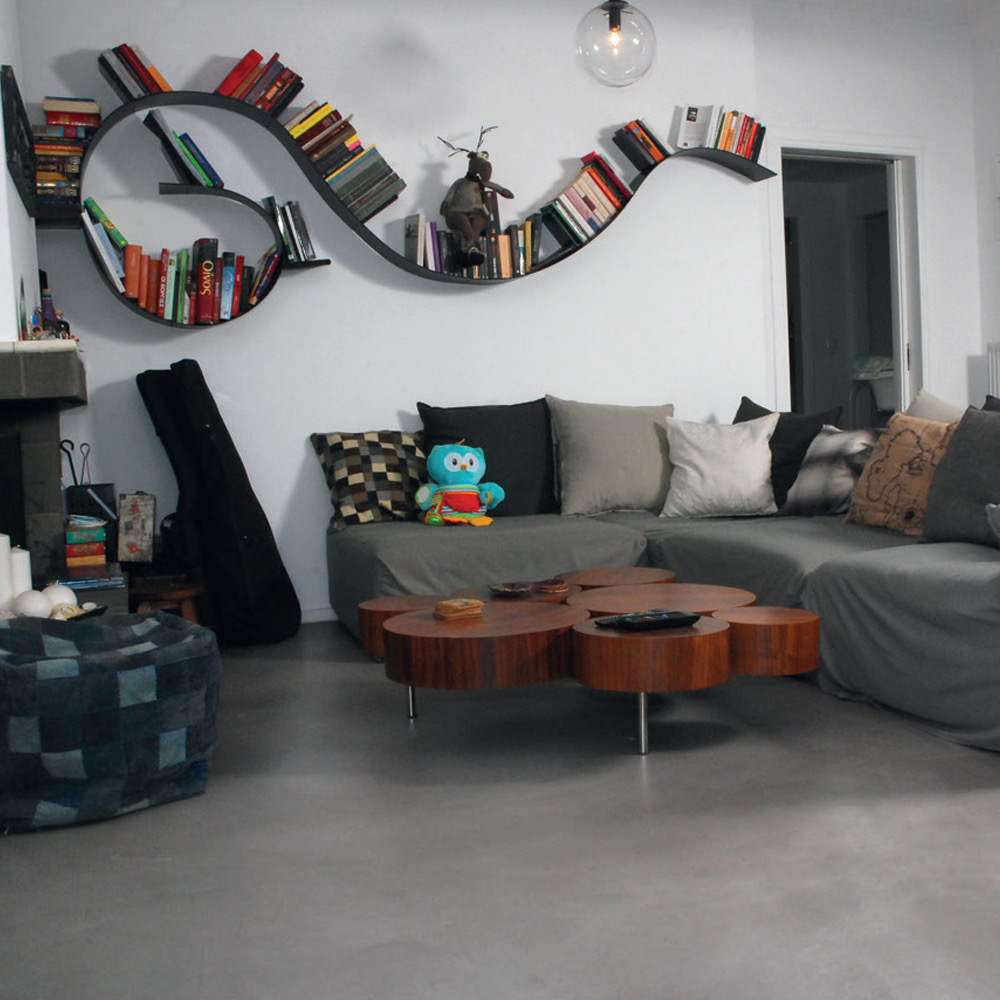
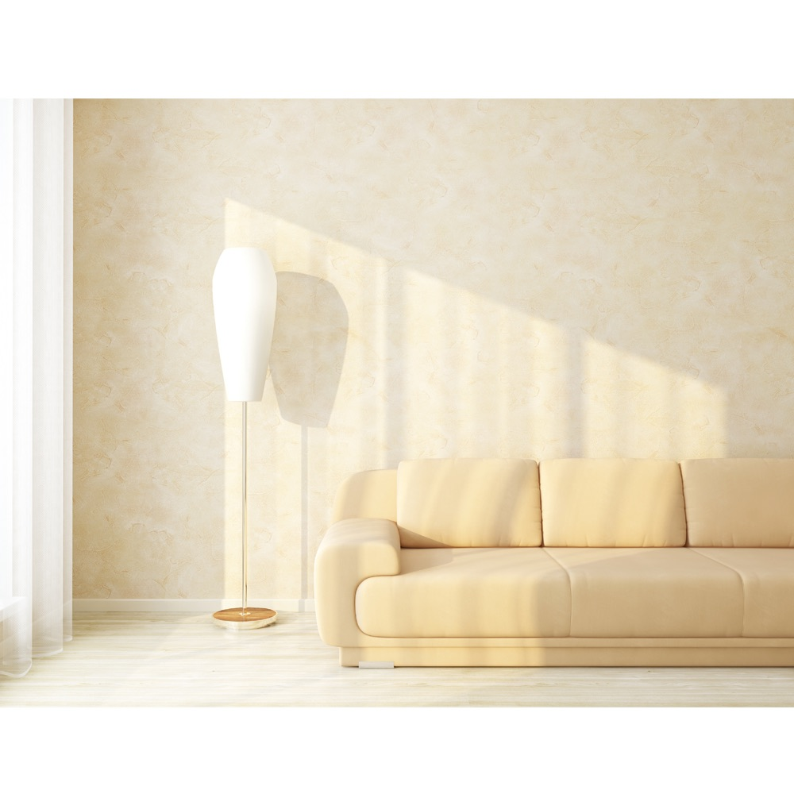

Obchod › Mikrocement a dekoratívne povrchy › Mikrocement

Durostick DS-258 Deco Micro Flex, hotová mikrocementová pasta (finálna vrstva), 5 kg / 15 kg
DS-258 Deco Micro Flex je dekoratívna mikrocementová pasta na báze akrylových živíc pripravená na použitie, určená na steny, stropy, podlahy a nábytok. Dobre kryje už v jednej vrstve, premosťuje vlasové trhliny, znáša rozťažnosť a zmrašťovanie podkladu, rýchlo schne a už na druhý deň je pripravená na lakovanie. Dodáva sa v bielej, svetlosivej a tmavosivej farbe, tónuje sa tekutými pigmentmi Durocolor v striekačkách (120 receptúr). Na vysoko zaťažované podlahy sa pridáva tvrdidlo DS-258 Hardener.
Cena na vyžiadanie
Variant: 5 kg · 15 kg
- Balenie
- Vedro 5 kg alebo 15 kg
- Spotreba
- 0,6-0,7 kg/m² na vrstvu
- Farby
- Biela, svetlosivá, tmavosivá; tónovanie Durocolor



Technické údaje
| Použitie | Steny, stropy, podlahy, pracovné dosky, vstavaný a drevený nábytok, stoly, dvere; obytné a komerčné priestory, fasády |
|---|---|
| Podklady | Nová omietka, sadrokartón, cementové dosky (penetrácia Aquafix), pevná stará farba (ľahké prebrúsenie), drevo (Duroxyl Wood); nerovné podlahy vyrovnať DS-250 / DS-252 Flex so sieťkou; obklady a mramor: kremenný základ DS-255 / DS-290 + DS-250 / DS-252 Flex |
| Spotreba | 0,6-0,7 kg/m² na vrstvu |
| Vrstvy | 1-2 vrstvy, celková hrúbka najviac 1,2-1,4 mm; druhá vrstva po úplnom vyschnutí prvej; brúsenie zrnitosťou 180, potom 240 |
| Lak | 2 vrstvy (v sprchách 3 vrstvy), na podlahy Decofin Aqua PU |
| Tvrdidlo | 156 g na 5 kg pasty, 470 g na 15 kg (asi 3,1 % hmotnosti) |
| Balenie | Vedro 5 kg (120 ks na palete), vedro 15 kg (48 ks na palete); tvrdidlo 156 g a 470 g |
| Farby | Biela, svetlosivá, tmavosivá; tónovanie Durocolor (20 základných pigmentov, 120 receptúr; dávka: ml podľa receptúry × 0,2 na 1 kg pasty) |
| Norma | EN 1504-2:2004, DoP č. 110 z 30.10.2023, systém 4; EPD S-P-13779 |
| Paropriepustnosť | Trieda I (sD < 5 m) |
| Kapilárna nasiakavosť | w < 0,1 kg/m²·h^0,5 |
| Priľnavosť | ≥ 1,0 N/mm² (DoP), 1,2 N/mm² (EN 1542) |
| Reakcia na oheň | Euroclass F |
| Hustota | 1,65 kg/l |
| Sušina | 73-79 % |
| pH | 8 |
| Povrch | Matný / polomatný |
| Zaschnutie na dotyk | Asi 30 min |
| Teplota nanášania | +5…+35 °C |
| VOC | Max. 45 g/l (limit EÚ 200 g/l, 2004/42/ES) |
| Skladovanie | 18 mesiacov, chrániť pred slnkom a mrazom |
Bezpečnosť a zákonné informácie
Podľa karty bezpečnostných údajov (verzia 2017): výrobok nie je klasifikovaný ako nebezpečný, EUH208 (obsahuje izotiazolinóny). Aktuálnu kartu si vyžiadame od výrobcu.
Výrobca: DUROSTICK S.A., Aspropyrgos, Attika, Grécko.
Distribútor na Slovensku: ART STAV s. r. o., Jarabinková 6B, 821 09 Bratislava, IČO: 57915946, info@art-stav.sk.
Dokumenty
Ďalšie dokumenty si vyžiadame od výrobcu.